Create an Event
The Event Calendar is your chapter's calendar. Events here are from your chapter's perspective, events that your chapter is hosting.
Your chapter meeting is a closed event. You can have guests but it is still a closed meeting.
If you choose to put something like the Sturgis Motorcycle Rally on your Event Calendar it would be an 'other event'. If you put a dealer event on your calendar, it would be marked as 'dealer event'.
For any 'open chapter ride' or 'open event' that your chapter hosts you need to apply for extra insurance. That needs to be approved and then paid for. Talk with your H.O.G. Regional Manager for further clarification.
- Login to your account on raleighhog.com, or your chapter's website. Referencing the image below, you will see a smaller Navigational Bar (navbar) on top of the Chapter navbar. 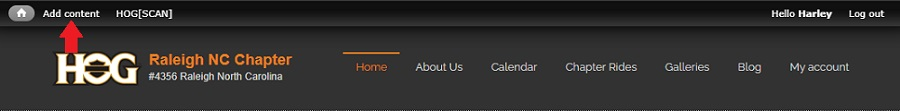
- Click Add content to go to the following screen. Reference image below
- Article - creates a blog entry, not used here and a different tutorial
- Event - this is how Event Calender entries are made and is the purpose of this tutorial
- Event checkin - the check-in process uses the HOG[SCAN] app, this is not used
- Forum topic - forum has been turned off for the website, this is not used
- Gallery - you have access to add to the Gallery but this will be done by the Photographer, not used here and a different tutorial
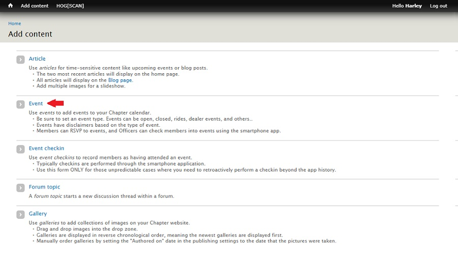
- Click Event and the Create Event page opens. Reference image below 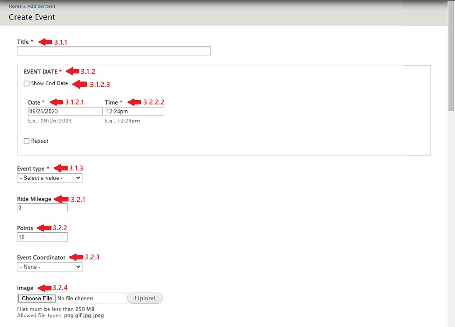
- There are four required fields. These fields, designated with a red asterisk, must be populated prior to saving the event.
- Title - A short, descriptive title
- EVENT DATE - Includes Date and Time
- Date - Event date formatted as
mm/dd/yyyy
- Time - Event time formatted as
hh:mm followed by am or pm
- Check the Show End Date box when the event is a multi-day event. The second Date / Time fields are populated with the last day of the event.
- Event type - our events (rides / meetings) are closed events
- Note: If Event type is Road Captain Events or RC pre-rides, the event will only appear on the Road Captain Event Calendar. (The RC Event Calendar can only be viewed by RC's after they've logged in.)
- The other fields include;
- Ride Mileage - this field is currently not used, it can be left blank. Fill it in if you know it as it may be incorporated in the future.
- Points - used to identify newer members, leave at the default of 10
- Event Coordinator - select from the dropdown. If the name isn't in the list leave it blank
- For Raleigh HOG, there are members that have dual roles (officer & road captain). I've made it so that road captains have first name, last initial without a period. Select the coordinator from the road captains so if someone with a dual role changes roles, there will not be a change in the calendar.
- Image - do NOT use this field. An image, if available, will be included in the Body area. (If populated here it messes with the copy flow and the map.)
- Body (Edit summary) - this is where the destination image (if available) and the event details are placed
- The image below shows the Body toolbar. Hover over an icon to see a tooltip pop-up of the function of that icon. The icons outlined in red are ones that are of use. The rest can be ignored as there is no need to use HTML/CSS to style the copy. 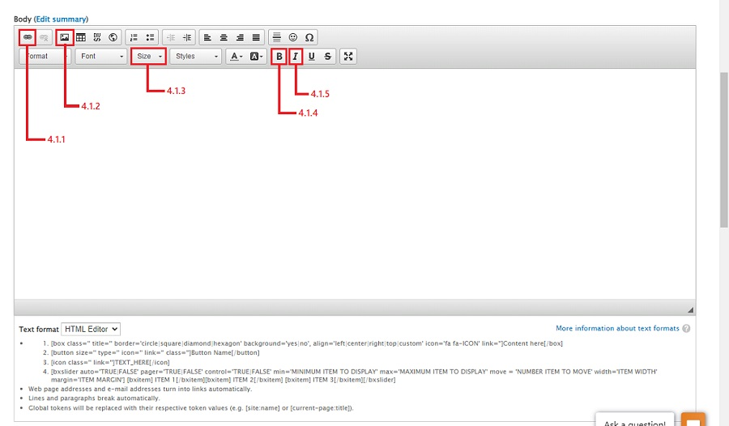
Link icon - use to provide a link to a hotel to make reservations for overnight tripsImage icon - use to include an image of the destination in the copy. Images for Raleigh HOG's frequent ride destinations, dealer events and meeting/parties have been preloaded and are currently available.Size dropdown - the font size defaults to 14px. It reads easier if you choose 16 from the dropdown.Bold icon - use to make text stand out. For instance, Login and click RSVP to repondItalic icon - the name of the restaurant/destination is usually in italics to make it stand out from the rest of the copy
- Click the
image icon to add an image to the copy and the following Image Properties pop-up appears. Referencing the image below, click the Browse Server button. 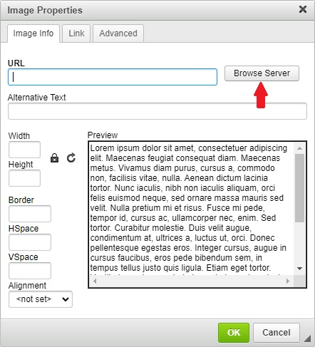
- After clicking the Browse Server button, the following window opens.
I clicked the 'activities' directory to expand it and then clicked the 'calendar_images' subdirectory to expand it and show the three subdirectories Raleigh HOG has for their images. 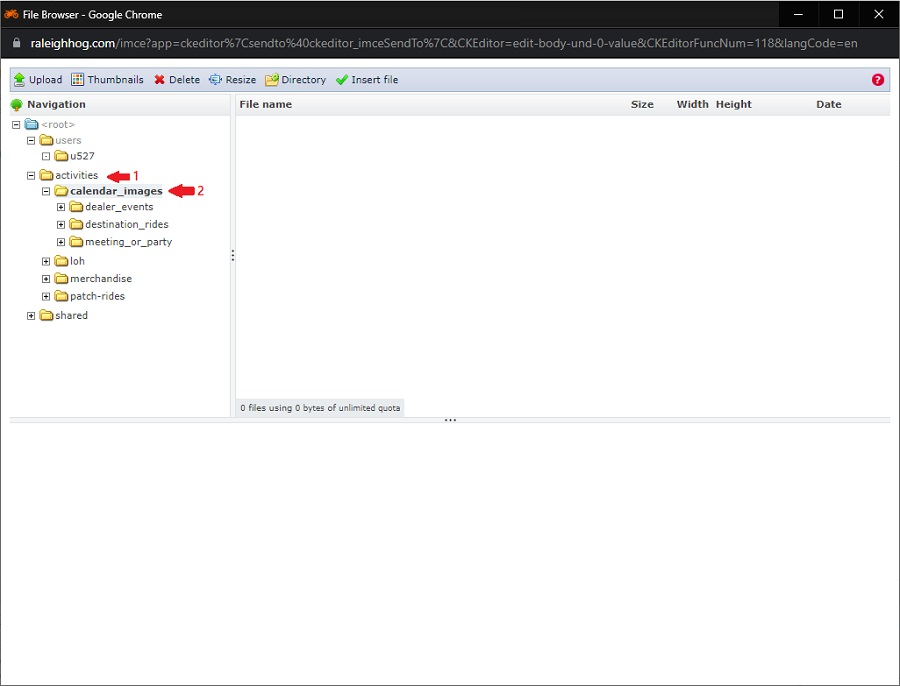
- I didn't take a screenshot but in the previous step I clicked the 'destination_rides' subdirectory to expand it and then double clicked an image to select it.
Referencing the image below, this brings you back to the Image Properties pop-up.
Select the larger of 'Width' or 'Height' and set it to 300. (The image's aspect ratio will be maintained)
Click the OK button. 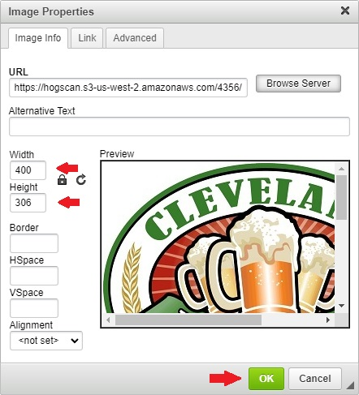
- Referencing the image below, you are brought back to the Body (Edit summary) window.
Hit the
enter key to start a paragraph and put in your event details. 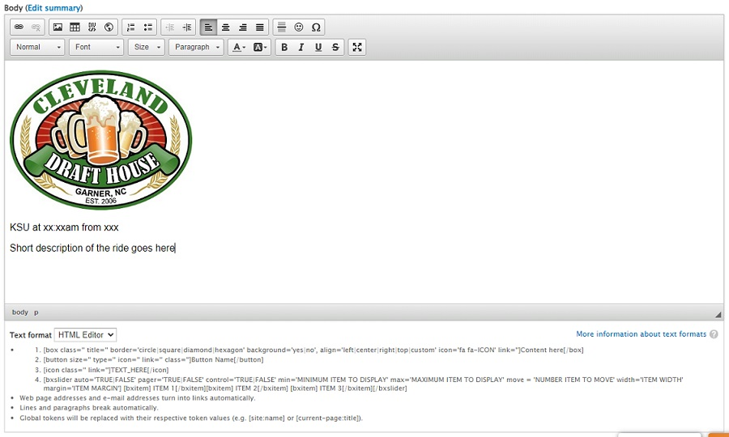
- Editing tip for the Body (Edit summary) section. Reference the image below
- Use the
shift+enter keys to have a break in the line.
- Use the
enter key to start a new paragraph.
- Note that in the copy, the times listed match the format of the website timestamp (hh:mm). You want to keep things consistant.
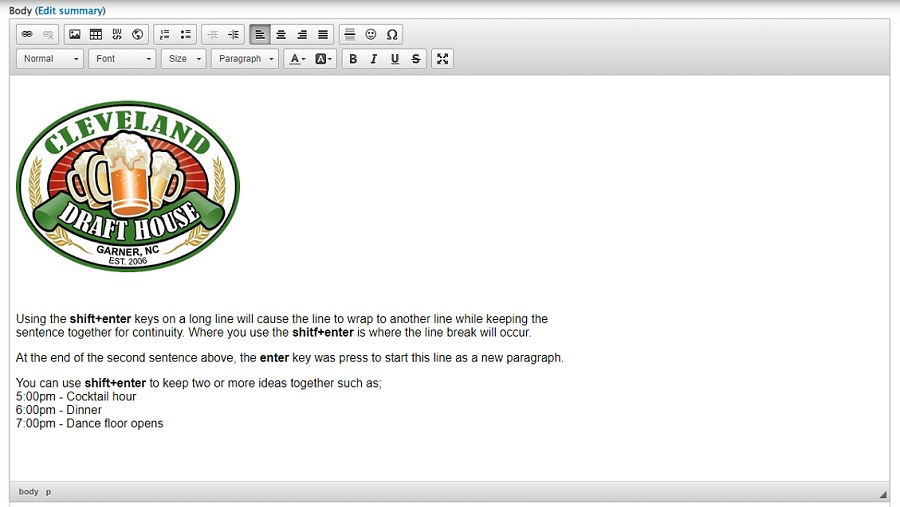
- EVENT LOCATION section
- Optional, does not have to be filled in
- If known, fill in Street, City & State
- Click the "Find Address on Map" button to populate the map 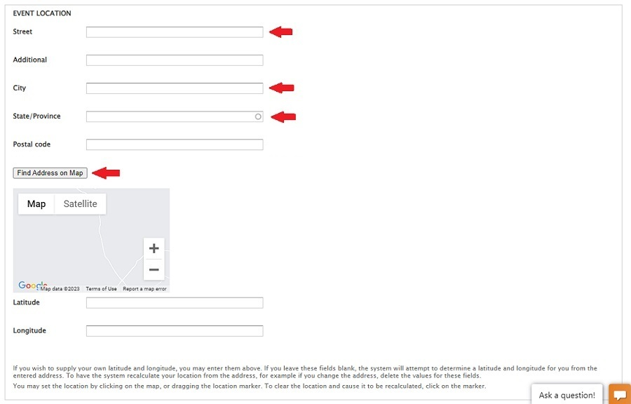
- Scroll to the bottom of the page
- Optionally fill in the 'Revision log message' section. Something as simple as "initial event create" is good when first creating the event so others looking can see what was done.
If editing, something simple like "update event start time" is good enough. Again, so others looking can see what was done. (Members will not see these notes) 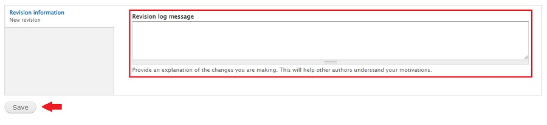
- Click the Save button to finish
- The event has been added to the appropriate calendar
Add an Image to a Directory
As time goes by, new ride destinations and events will be added to the calendar that may not have an image. The following steps will help you upload a new image to the appropriate directory.
This tutorial assumes you have the image you want to upload in a directory on your local machine.
As mentioned in the notes section at the top of this tutorial, use caution when in the directories. You have the ability to delete files. This should never be done.
- Login to your account on the website.
- In the navbar, click on My account.
- In the page that opens, click the File browser tab. see image below
- In the page that opens;
- Click on the activities subdirectory name to expand it
- Then click on the calendar_images subdirectory name to expand it
- Referencing the image below, you will see three subdirectories, dealer_events, destination_rides and meeting_or_party (these should look familiar, this is where you went to get the images you used when creating an event following the instructions in the previous section)
- The following steps show how to add an image to the destination_rides rides subdirectory. Select the appropriate subdirectory when adding an image. The steps will be the same.
- Click the subdirectory name where you want to upload (add) a new image.
- Then, in the toolbar at the top, click Upload. see image below
- In the pop-up that opens, click the Choose File button. see image below
- There is no screenshot but a pop-up will open showing files on your machine. In the directory where you have the image, double click the image name to select it.
- After doing so, you will see the image filename in the box next to the Choose File button
- Click the Upload button. see image below
- You will see the image filename has been added to the existing images and a preview of the image at the bottom since it is selected.
- If you have another image to add in the same subdirectory, click the Choose File button and repeat the instructions from step 4 above.
(If adding an image to a different subdirectory, follow the steps starting with step 3 above.)
- Click the x in the pop-up to close it. see image below